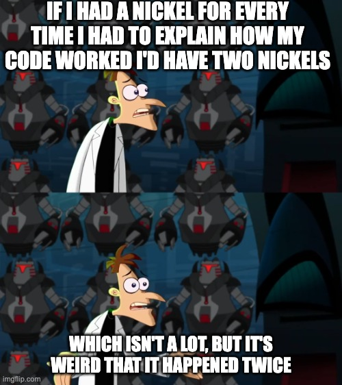

Motivation
I am working on building a desktop application that processes the data generated by an analytical instrument.
As with all projects, it seemed an easy application to build until I started working on it.
The course CSC 148 trained me to write docstrings and use typing for Python.
I was documenting my code on the go.
However, as I was developing the application individually my efforts in documenting were somewhat under-utilized.
I had a working UI for Windows that I shared with my boss.
There were a few instances where I had to explain why something behaved in the way it did and
I had to refer to the codebase, trace the function calls, and go through the docstrings before
I could come up with an answer.

What if, there was a tool that could turn my docstrings into a documentation?
Goal
I had the repository for the project on GitHub.
I thought it would be "nice" to have the necessary documentation displayed on the homepage of the repository as I have seen on countless GitHub repos.
But, I was in no mood to rewrite in readme.md what I had already written in my docstrings.
On top of that, when the codebase is updated, I need to remember to update the appropriate section in the readme.md. This does not sound like a good design.
So, not only do I need to generate the documentation automatically, but I also need to generate it as a markdown file.
pydoc-markdown
During my treasure hunt, I came across pydoc-markdown. It promised what I was looking for. I read the instructions
and dove right into using it.
...
...
Uh oh, what is this now? Turns out, the pydoc-markdown.yml configuration that I was using had some issues.
Below is the configuration worked for me:
Once the configuration is setup, I run the following the command to print the documentation to readme.md:
Voila!The documentation is ready. Now, I can push this to the remote remo and the homepage of the repo will display the documentation. Hopefully, this will make it easy for me to explain my code and it will be easier for someone in future to understand the code.
pydoc-markdown
...
...
ImportError: dataHandler
loaders:
- type: python
search_path: [.]
modules:
- dataHandler
$ pydoc-markdown > readme.mdVoila!The documentation is ready. Now, I can push this to the remote remo and the homepage of the repo will display the documentation. Hopefully, this will make it easy for me to explain my code and it will be easier for someone in future to understand the code.
Going forward
I'll start by sharing the repo with my boss and get his feedback on the documentation in the GitHub repo.
The documentation generated in such a way is pretty basic.
The documentation for pydoc-markdown doesn't explain how to document the code in a way that captures all the features of the docstring parser.
Perhaps I could comment on certain variables, and these comments could be used to illustrate the intended use of the methods in the documentation.
Moving forward, my goal is to enhance the readme.md by learning to write better docstrings and comments.